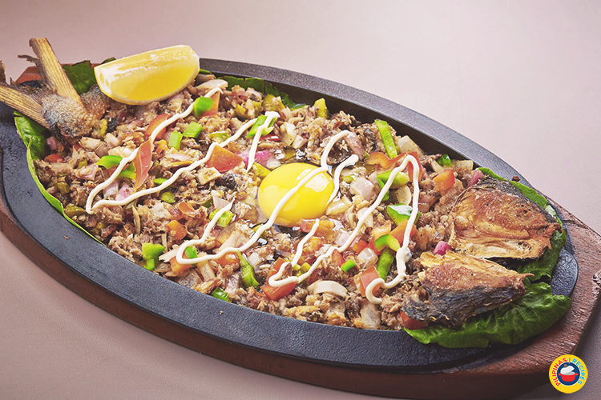
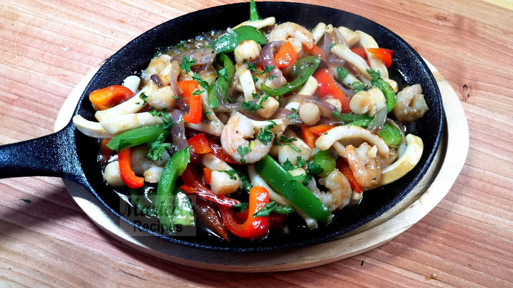

Sizzling Barbecued-Spare ribs
₱. 110.00
- A barbecued-spare ribs recipe that serves 4 people. |
Sizzling Pork Sisig

₱. 120.00
- A filipino dish made from parts of a pig's face and belly, and chicken liver which is usually seasoned with calamansi, onions, and chili peppers. |
Sizzling Bangus Sisig

₱. 130.00
- Bangus Sisig is a Filipino dish made with milkfish, chopped onions, bell, and chili peppers.
|
Sizzling Mixed Seafood

₱. 140.00
- This Sizzling Seafood is a delicious sizzler dish that can be ready in under 30 minutes! Made of stir-fry mixed seafood and vegetables.
|
Sizzling Sweet & Sour Chicken
₱. 150.00
- Made of chicken thigh coated in cornstarch (or a heavy batter) and fried. It's then coated in a sauce made of ketchup, vinegar, sugar, water and cornstarch (sometimes pineapple juice).
|